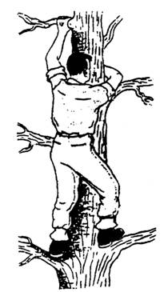

Có thể do mải mê công việc khảo cứu hay truy đuổi theo dấu vết của con mồi mà bạn thất lạc giữa rừng sâu. Hoặc bạn đi chậm chân rồi tụt hậu sau đoàn lữ hành và bị mất dấu mà không ai biết. Hay đang đi cắm trại, thám hiểm mà bị lũ cuốn trôi dạt vào một nơi hoang vu, mất hết hành lý. Cũng có thể bạn lo trốn chạy, đào thoát khỏi tay kẻ địch hay “thú dữ” đang truy đuổi, mà rơi vào một nơi hoàn toàn xa lạ... vân vân...
Có hai trường hợp thất lạc:
1. Thất lạc không ai biết, không người tìm kiếm
2. Thất lạc có người biết và sẽ tổ chức tìm kiếm
THẤT LẠC KHÔNG NGƯỜI TÌM KIẾM
Trường hợp vì một lý do nào đó mà các bạn bị thất lạc, nhưng không có ai biết để tổ chức những cuộc tìm kiếm, và vì các bạn không chuẩn bị cho những vật dụng cần thiết (hoặc nếu có thì cũng không đầy đủ), cho nên các bạn phải đặt mục tiêu hàng đầu là thoát ra khỏi vùng nguy hiểm càng sớm càng tốt, các bạn phải tìm cho bằng được con đường ngắn nhất đưa các bạn tới khu dân cư hay vùng an toàn gần nhất. Vì vậy, mọi sức lực, khả năng và trí tuệ của các bạn đều phải tập trung vào việc tìm đường thoát nạn. Nếu sau hai ba ngày mà chưa thoát ra được, các bạn sẽ hoang mang lo sợ, mất tự chủ, dẫn đến tình trạng suy sụp từ thể xác đến tinh thần, đây là điều tối kỵ nhất đối với một người bị thất lạc.
Trong cơn hoảng loạn, các bạn sẽ không còn bình tĩnh để cân nhắc suy xét, nên dễ đưa đến việc đi lòng vòng quanh quẩn trong khu rừng, có khi sau một hồi loanh quanh, các bạn lại quay trở về vị trí lúc ban đầu, mà trong dân gian thường gọi là bị “ma dắt”. (Hiện tượng nầy được các nhà khoa học giải thích như sau: Hai bước chân chúng ta không đều nhau, một bước ngắn, một bước dài. Khi đi trên đường, chúng ta tự động chỉnh hướng theo con đường. Còn trong rừng, do đi theo bản năng nên có khuynh hướng đi theo vòng tròn).
Ở đây, chúng tôi không đặt vấn đề đúng hay sai, mà chỉ nhắc cho các bạn lưu ý, đây là một hiện tượng có thật và rất phổ biến. Khi gặp phải trường hợp như thế nầy, các bạn sẽ hoang mang lo sợ, thất vọng, mất hết tinh thần và ý chí phấn đấu... Đây là một điều rất tai hại, nó còn nguy hiểm hơn cả đói khát và bệnh tật. Khi mà bản năng sinh tồn và nghị lực của các bạn không còn, thì tử thần đang chờ sẵn.
Vì vậy, để thoát nhanh ra khỏi vùng xa lạ, các bạn cần phải thật bình tĩnh để tìm cho được hướng ra, vì thường trong các trường hợp nầy, các bạn không cách xa khu dân cư là bao nhiêu.
ĐỊNH HƯỚNG – TÌM ĐƯỜNG
Cho dù các bạn có địa bàn trong tay thì cũng vô ích nếu như các bạn không biết chúng ta phải đi về hướng nào (trong trường hợp nầy, địa bàn chỉ hữu ích khi chúng ta biết khu dân cư ở hướng nào hoặc các bạn có bản đồ cả khu vực mà chúng ta đang đứng và các bạn cũng phải biết mình đang ở vị trí nào trên bản đồ).
Bây giờ coi như chúng ta không có bản đồ hay địa bàn gì cả, thì làm thế nào để chúng ta vẫn có thể tìm được hướng cần phải đi. Hướng đó là con đường ngắn nhất dẫn đến khu dân cư gần nhất.
Để làm được điều đó, các bạn có nhiều cách:
Trước tiên, các bạn chọn một điểm cao nhất trong khu vực như: cây cao, đỉnh đồi, gộp đá... để leo lên đó mà quan sát (Điều nầy cũng rất khó thực hiện nếu như các bạn ở trong một cánh rừng già bằng phẳng, vì khi leo lên cao, các bạn sẽ không trông thấy gì ngoài những ngọn cây trùng trùng điệp điệp).
Khi trèo cây, để được an toàn, các bạn phải trèo sát vào thân cây, đặt bàn chân sát vào nách của cành cây, tay bám vào những cành chắc chắn, cơ thể của các bạn lúc nào cũng ở trên 3 điểm chịu lực (1 chân và 2 tay hay 1 tay và 2 chân).
Nếu ban ngày, các bạn có thể thấy một vài đặc điểm của khu dân cư như: ngọn tháp, cao ốc, đồng ruộng, nhà cửa, khói...
Nếu ban đêm, các bạn có thể thấy ánh lửa, đèn điện... Những nơi có phố thị, dù ở thật xa, thì ban đêm ánh sáng cũng hắt lên bầu trời một vùng như hào quang.
Nếu khu dân cư ở gần, khi rừng yên ắng, các bạn có thể lắng nghe văng vẳng những tiếng động lớn như còi xe, còi tàu...
Khi đã định hướng được rồi, các bạn chỉ cần có quyết tâm cao và một vài kỹ năng chuyên môn, là bạn có thể thoát nạn.
Thế nhưng nếu chúng ta không thể thấy hay không thể nghe gì thì phải làm sao?
Các bạn hãy cố tìm cho ra một con suối hay một con sông và đi xuôi theo hướng nước chảy về phía hạ lưu. Tuy không dễ dàng gì vì sông suối không bao giờ chảy theo đường thẳng nên lộ trình di chuyển bao giờ cũng dài hơn rất nhiều. Hơn nữa, hai bên bờ sông suối cây cối thường rất rậm rạp, rất khó di chuyển. Có thể nói; đây là con đường an toàn chứ không phải là con đường ngắn nhất.
Nếu gặp con suối cạn, thì các bạn có thể đi theo lòng suối, vừa dễ di chuyển, vừa có hy vọng gặp suối lớn hay sông (và nhiều cơ may tìm thấy nước trong các mạch nước hay những vũng nhỏ). Khi đã đến sông, nếu có thể, các bạn nên đóng bè để thả trôi theo dòng sông (Xin xem phần ĐÓNG BÈ).
Để tìm ra sông hoặc suối, các bạn có thể trèo lên một điểm cao để quan sát, nếu thấy nơi nào có hàng cây xanh chạy dài (nhất là vào mùa khô, thì hy vọng nơi đó có suối hay sông). Hoặc các bạn di chuyển đổ xuống theo triền dốc của sườn núi hay sườn đồi. Ở cuối dốc, thường có khe hoặc suối nhỏ. Nếu theo dòng chảy, các bạn sẽ gặp sông suối lớn hơn.

Chúng ta di chuyển men theo suối hay suối là do tất cả mọi con suối đều đổ ra sông, mà dọc hai bên sông thường có những khu dân cư hay làng chài hoặc có thể gặp thuyền của ngư dân, của người đi rừng... các bạn sẽ có cơ may được cứu thoát.
Trong lúc đang di chuyển, nếu gặp một con đường mòn thì vận may của các bạn sẽ được nhân lên. Tuy nhiên, các bạn cũng cần xem xét đó là đường mòn cũ hay mới, do người hay thú rừng tạo nên, đường mòn dẫn vào rừng sâu hay đưa ra khu dân cư (Các bạn phán đoán bằng cách quan sát những nhánh rẽ của con đường, nếu đi sâu vào rừng thì thường có hình chữ V thuận, ngược lại, nếu dẫn ra khu dân cư thì nó có hình chữ V nghịch. Nếu không phán đoán được, các bạn di chuyển cho đến khi gặp một con suối cắt ngang qua đường mòn thì có thể trụ lại chờ người đi qua. Vì ở đây, chúng ta có nước uống và cũng có thể để tìm thấy thức ăn ven suối. Nhưng nếu các bạn cảm thấy mình còn đủ khả năng thì sau khi nghỉ ngơi và chuẩn bị đầy đủ nước uống mang theo, chúng ta sẽ lên đường đi tiếp, hãy tin rằng; nơi có người ở không còn xa lắm đâu. Kiên nhẫn lên, các bạn sẽ được cứu thoát.
THẤT LẠC CÓ NGƯỜI TÌM KIẾM
Trước khi vào nơi hoang dã, bạn đã báo tin cho ai đó, nhưng đến ngày hẹn mà các bạn không về... Bạn rời khỏi nhóm, đi đâu đó rồi bị lạc... Bạn được giao đi làm nhiệm vụ ở một nơi xa lạ rồi mất tích... và những trường hợp tương tự như trên, thì người ta sẽ tổ chức những đội cứu hộ đi tìm kiếm các bạn. Nhưng còn bạn? Bạn phải hành động như thế nào??
Tất nhiên bạn... sẽ bị một cú “sốc” khi biết mình bị lạc. Nhưng bạn hãy bình tĩnh và thư dãn, vì mọi việc không đến nỗi tồi tệ như bạn tưởng đâu.
Hãy cố gắng nhớ lại những kỹ thuật và kỹ năng về mưu sinh thoát hiểm mà các bạn đã học (hay đã đọc đâu đó) rồi đem ra áp dụng, những kết quả của các bài học nầy (cho dù rất nhỏ) sẽ giúp bạn tự tin hơn, tạo cho các bạn thêm nghị lực để phấn đấu, vượt qua mọi trở ngại để tồn tại.
Trong khi chờ người đến cứu, các bạn hãy làm theo những lời khuyên sau đây:
- Ở YÊN TẠI CHỖ, nếu các bạn không tìm được đường ra và chắc chắn mọi người sẽ phát hiện ra được sự mất tích của các bạn và sẽ tổ chức tìm kiếm. Điều nầy rất cần thiết cho các bạn, vì nó hạn chế sự tiêu hao sức lực, năng lượng... trong khi các bạn đang thiếu thốn thực phẩm và có thể bị tổn thương.
- TÌM HIỂU MÔI TRƯỜNG CHUNG QUANH, để có thể phát hiện nguồn nước, thực phẩm, chỗ trú ẩn, củi...
- DỰNG LÊN MỘT CHỖ TRÚ ẨN tiện nghi thoải mái, sẽ làm cho các bạn an tâm, thư dãn, bớt căng thẳng, lo sợ...
- TẠO RA CÁC DẤU DỄ NHẬN THẤY để cho những người đi tìm kiếm các bạn (hoặc phi cơ bay ngang qua) dễ dàng nhận ra nơi ở của các bạn như: Đốt lửa (ở nơi trống trải), căng những tấm vải màu, quần áo, nón mũ... lên cao hoặc nơi dễ thấy.
- GÂY RA NHỮNG TIẾNG ĐỘNG LỚN như: thổi còi, gõ vào những thân cây rỗng, đốt tre để nguyên cây (sẽ gây ra những tiếng nổ lớn), bắn súng (nếu có)
- GIỮ LỬA CHÁY LUÔN LUÔN nếu nguồn củi hay nhiên liệu cho phép, để làm tín hiệu, xua đuổi thú dữ, thu dãn tinh thần... (nhưng phải đề phòng cháy rừng)
- KIÊN NHẪN VÀ THẬN TRỌNG. Đừng nóng nảy vội vàng cố sức tìm đường thoát ra, vì có thể làm cho các bạn lạc càng ngày càng xa hơn, gây thêm khó khăn cho những người đi tìm kiếm các bạn.
- HÃY AN TÂM vì cơ thể của các bạn có thể chịu đựng sự thiếu nước trong 3 ngày và thiếu thực phẩm trong 3 tuần. Điều các bạn cần phải làm là ở yên tại chỗ, người ta sẽ tìm thấy các bạn.
THẤT LẠC MỘT NHÓM
Nếu là một nhóm đã có tổ chức sẵn thì không nói làm gì, còn nếu không thì phải chọn một nguời lanh lợi, tháo vát... để bầu làm “Toán trưởng”, và các thành viên trong nhóm phải tuyệt đối tuân phục người nầy. Nhiệm vụ của Toán Trưởng là:
- Phân công cụ thể cho từng người một, tận dụng mọi khả năng, kỹ năng, sở trường của họ.
- Không để một thành viên nào trong nhóm suy sụp tinh thần, gây hoang mang cho cả nhóm (Toán Trưởng dù có bị dao động cũng không để lộ ra ngoài)
- Toán Trưởng có thể tham khảo ý kiến của tất cả mọi thành viên, nhưng chính mình phải tự quyết định.
- Giải quyết linh động và hợp lý những vấn đề thường xuất hiện trong toán như: mệt nhọc, đói khát, bệnh tật... và những va chạm, cãi cọ, gây chia rẽ...
- Tạo nên một bầu không khí lạc quan, phấn chấn, một tinh thần đoàn kết yêu thương giúp đỡ lẫn nhau. An ủi động viên những người bị suy sụp tinh thần. Đó là sức mạnh và sinh lực giúp nhóm tồn tại để thoát ra khỏi nơi nguy hiểm.
ĐỀ PHÒNG THẤT LẠC
Để đề phòng không bị thất lạc ở trong rừng sâu, nơi hoang dã, các bạn nên làm theo những lời khuyên sau đây:
TRƯỚC KHI VÀO RỪNG HAY NƠI HOANG DÃ:
- Thông báo cho người thân (hay giới chức có thẩm quyền) biết các bạn sẽ đi đâu? Làm gì? Lộ trình dự kiến?... và khi nào thì các bạn về?
- Rèn luyện thể lực, nhất là đôi chân của các bạn, để có thể vượt qua những chặng đường dài 20 – 30 km một ngày.
- Tập thành thói quen mang theo trong người những vật dụng cần thiết như: dao xếp (đa năng), bật lửa, địa bàn... nhất là những người thường xuyên đi rừng.
- Không nên rời “TÚI MƯU SINH” khi đi rừng.
- Học tập và rèn luyện khả năng sử dụng tối đa mọi trang bị, thông thạo về các kỹ năng mưu sinh thoát hiểm, biết các phương pháp sử dụng bản đồ và địa bàn, có kiến thức về thiên nhiên, có thể phân biệt và lý giải được các dấu vết, tiếng động, mùi vị, đặc tính của các vật thể và sự việc chung quanh.
- Biết cách xử lý các trường hợp sơ cứu khẩn cấp và chữa trị bệnh tật.
KHI VÀO RỪNG
Có bản đồ:
- Cứ mỗi 20 – 30 phút, kiểm tra lại điểm đứng của các bạn trên bản đồ, so sánh xem có phù hợp với cảnh quang thực tế chung quanh hay không?
- Theo dõi và so sánh hướng gió và hướng di chuyển của các bạn, nếu thấy gió bị lệch hướng so với lúc ban đầu, hãy kiểm tra lại hướng di chuyển.
- Chọn một điểm chuẩn để đi tới, như vậy, cho dù các bạn có đi vòng vèo, cũng không bị lệch hướng (Xin xem phần DI CHUYỂN & VƯỢT CHƯỚNG NGẠI)
- Ghi nhớ thời gian và tốc độ di chuyển của các bạn, để ước tính đoạn đường đã vượt qua.
- Đánh dấu trên bản đồ những điểm đặc biệt dễ nhận thấy (nhưng không có in trên bản đồ) như: cây đại thụ, gộp đá, dị hình, gò mối, hang đá, túp lều thợ rừng, mạch nước...
KHÔNG CÓ BẢN ĐỒ
- Để lại dấu vết dễ nhận thấy làm tín hiệu trên đường đi của các bạn như: vạt một nhát dao vào thân cây, bẽ gãy những cành cây, cột túm những bụi cỏ cao, sắp xếp đá hay cành cây theo một quy ước, cột vải vụn lên các cây nhỏ... Những dấu hiệu nầy phải dễ dàng phân biệt được với những dấu vết do thú vật hay thiên nhiên tạo ra.
- Phác thảo một sơ đồ, ghi chép những điểm đặc biệt của địa thế, những điểm chủân của địa hình, các cảnh quang đặc biệt, đánh dấu những lần đổi hướng.
- Theo dõi và ghi nhớ hướng gió, hướng mặt trời, mặt trăng lặn mọc, quan sát các chòm sao....
ÓC TƯỞNG TƯỢNG – SỰ ỨNG BIẾN
Óc tưởng tượng và sự linh động ứng biến cũng có thể cải thiện được phần nào tình thế. Nó làm cho các bạn tăng thêm nhuệ khí và nâng đỡ tinh thần của các bạn.
Hãy luôn luôn ghi nhớ: mục đích của chúng ta là sự sống còn, vậy hãy tự nâng đỡ minh bay bổng bằng những “giấc mơ đẹp”, bằng những “dự án lớn” cho tương lai. Chính những điều nầy sẽ tạo cho các bạn sức mạnh để vượt qua hoàn cảnh hiện tại.
Giữ gìn sức khoẻ và sinh lực: Nếu lúc nầy mà đau ốm hay bị thương thích gì, thì vận may của các bạn trong việc mưu sinh thoát hiểm sẽ giảm đi rất nhiều.
Đói khát, lạnh lẽo, hoang mang... làm giảm bớt sự hiệu quả của sức chịu đựng. Đó cũng là nguyên nhân làm cho các bạn hoa mắt, mệt mỏi, chán nản, bất cẩn, thấy những ảo ảnh, hành động như người mất trí... Tuy nhiên, khi thấy những hiện tượng như thế, các bạn hãy an tâm, đó chỉ là hậu quả của cơ thể quá mệt mỏi, không có gì nguy hiểm, chỉ cần bình tâm nghỉ ngơi là hết.
Sự ứng biến còn bao gồm việc các bạn có thể ăn được cả côn trùng, động vật và những thức ăn hiếm hoi lạ lẫm khác mà các bạn có thể tìm thấy trong rừng.
Khi cô độc trong rừng sâu, nếu các bạn không biết để cho đầu óc bay bổng, không biết ứng biến, thì rừng sâu sẽ nhấn chìm các bạn.